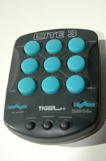

History
The game of Lite 3 was created by Tiger Games.
Game Play
The Pieces:
Each player is assigned a red or green piece.
Rules:
To move: Select an open slot.
To win: Be the first player to get three of your pieces in a row either horizontally, vertically or diagonally.
Lite 3 is a game very similar to Tic Tac Toe. The game is for two players. The only rule added to this game is that when a player has four of the squares selected on the board, the first square that the player selected becomes neutral again.
Strategies:
Try to remember the order of the pieces placed because a button may shut off even if you think you have a winning move.
Variants:
Misere: Force your opponent to connect three of his pieces in a row either horizontally, vertically or diagonally.
Novice/Expert: The actual game supports a novice/expert mode. In the novice mode, there is no time limit. In the expert mode, the computer plays
at its smartest and there is a time limit.
GamesCrafters:
Babak Hamadani
Pictures:
|  |